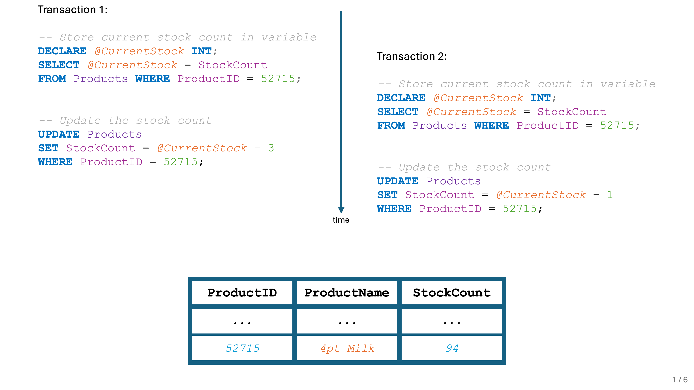
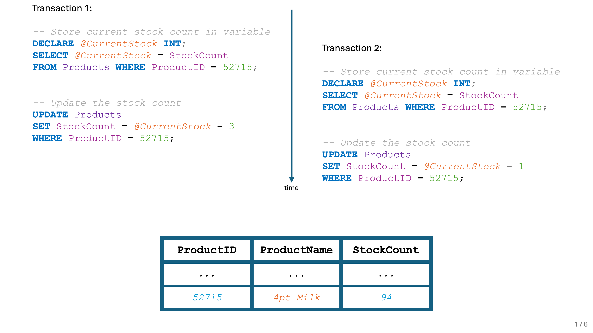

GCSE Link: None
 A client-server database is a system in which data stored in a central server can be accessed simultaneously by multiple clients.
A client-server database is a system in which data stored in a central server can be accessed simultaneously by multiple clients.
Users (clients) can read from or write to the database in transactions, which is a group of SQL commands. If one command in the transaction fails, all changes made in the transaction are rolled back (undone) and the whole transaction fails.
Concurrent access (where multiple users access the database at the same time) could lead to a
loss of data integrity (where the data in the database is inaccurate) if not managed properly.
One potential issue is the lost update problem, where two users attempt to write to the same
record at the same time, and one update is lost. Imagine a client-server database for a
supermarket, which includes a Products table like the one below:
Diagram 1 shows an example Products table in a supermarket's database.
 Diagram 1
Diagram 1
Now imagine two customers buy milk at the same time. The first one buys three bottles, while the other buys one. In the background, the stock count is updated:
Diagram 2 shows a step-by-step animation of what would happen to the Products table. Use the arrows to navigate.
 Diagram 2
Diagram 2
 


We can solve the lost update problem using record locks. When a transaction begins, a lock is
placed on the record which is being updated, which prevents other users from accessing it.
In the example above, Transaction 2 would have failed because it would have attempted to access
a locked record. It would then be retried later, giving the correct end result of 90:
Diagram 3 shows a step-by-step animation of record locking. Use the arrows to navigate.
 Diagram 3
Diagram 3


Transactions may also be placed in a queue, so that each transaction is executed fully
before the next transaction starts. This would also fix the lost update problem.
The final method for preventing the lost update problem is timestamp ordering. Each transaction
is given a timestamp when it starts, and each record is given two timestamps: when it was last
read from and when it was last written to. When a transaction attempts to write to a
record, its timestamp must be greater than both timestamps on the record. When a transaction
attempts to read from a record, its timestamp must be greater than the write timestamp of
that record. If the transaction doesn't meet these rules, it should be aborted and the changes
should be rolled back.
 What could be a potential issue with record locks?
What could be a potential issue with record locks?
The performance of the database could degrade if locks are placed unnecessarily (e.g. on a whole table instead of a single record).